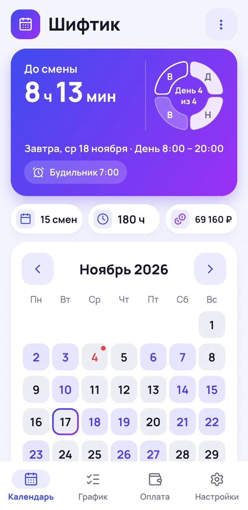
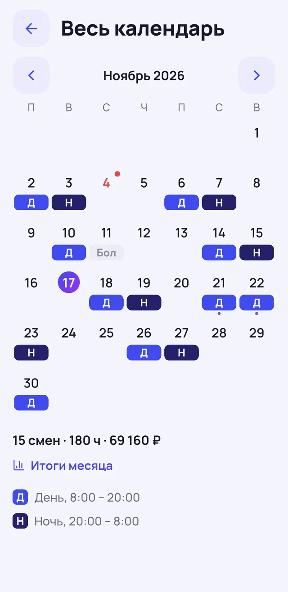
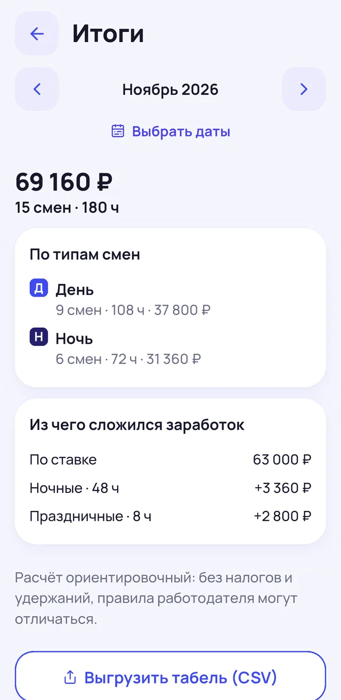
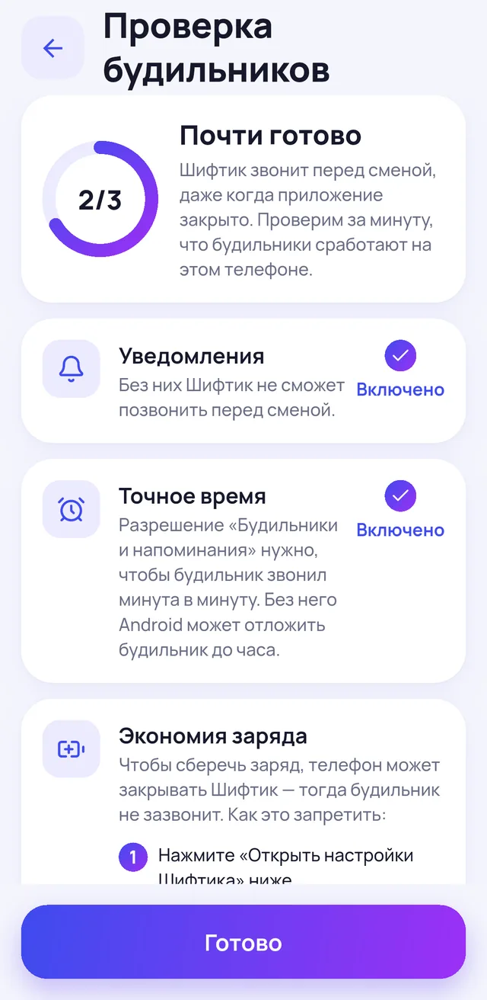

Готовые графики
2 через 2, сутки через трое, день-ночь-отсыпной-выходной, пятидневка — или свой цикл любой длины.
Шифтик знает ваш график наперёд: покажет, сколько до смены, разбудит вовремя и посчитает заработок за месяц. Без регистрации и интернета.
Бесплатно · Android 7.0 и новее

Выберите график один раз — Шифтик расставит смены на месяцы вперёд и будет помнить о каждой.
2 через 2, сутки через трое, день-ночь-отсыпной-выходной, пятидневка — или свой цикл любой длины.
Своё время для каждого типа смены и напоминание накануне вечером. Звонит, даже когда приложение закрыто.
Подскажет, что включить на вашем телефоне, чтобы будильник не опоздал. И даст поставить пробный.
Подмена, больничный, отпуск, своё время смены и заметка — без правки всего графика.
Ставка за час или за смену, ночные, праздничные и сверхурочные. Новая ставка — с нужной даты.
Смены, часы и заработок за месяц или любые даты. Табель выгружается в CSV.
Месяц или две недели смен — прямо на главном экране телефона.
Уволились, декрет или долгий больничный: смены и будильники на паузе, история остаётся.
График, ставки и правки — в одном файле. С ним всё переедет на новый телефон.
Смены, выходные и праздники видны сразу. Нажмите на день, чтобы поставить подмену, больничный или заметку.

Шифтик считает по вашим ставкам и правилам и показывает, из чего сложилась сумма.

Android экономит заряд и может закрыть приложение в самый неудобный момент. Проверка будильников покажет, что настроить на вашем телефоне, чтобы будильник зазвонил вовремя.

Да. Календарь, будильники, заработок, итоги, виджеты и резервная копия бесплатны и останутся бесплатными. Без рекламы и подписок.
Нет. График, будильники и расчёты работают без сети.
Только на вашем телефоне: регистрации нет, график и заработок никуда не отправляются. Подробно — в политике конфиденциальности.
Шифтик ставит точные будильники Android и звонит, даже когда приложение закрыто. Некоторые телефоны закрывают приложения ради экономии заряда — «Проверка будильников» подскажет, что настроить, и даст поставить пробный будильник.
Сохраните резервную копию в файл и восстановите её на новом телефоне: Настройки → Резервная копия.
Бесплатно, без регистрации и рекламы. Android 7.0 и новее.